Numerical Options¶
The numerical options of a simulation can be edited during the simulation setup using the Numerics widget in the Model Setup tab or using the Runtime Options dialog in the Simulation Manager tab while the simulation is running.
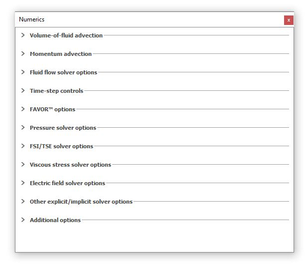
The default Numerical options for a new simulation are designed to provide a good balance between accuracy and runtime. However, users can edit the avaialble settings to change how the equations are solved. For instance, there are options for iterative solvers for pressure and viscous stresses, options for VOF algorithms, implicit/explicit methods, momentum advection approximation and initial time-step sizes to name but a few. For the user’s convenience, there is a default selection for every option on the Numerics widget. Multiple selections exist because of the wide range of simulations that FLOW-3D can be used to solve and that can differ greatly in length and time scales, and in the physical processes that control the flow. An optimum choice of the numerical options will provide an accurate and efficient simulation.
It is often difficult to find the optimum numerical options for challenging simulations.
A trial-and-error
approach is one way to test a model. Starting with the default selection is a
good way to proceed. During a simulation, the Mentor may suggest a
change to the numerical options. The Runtime Options feature in
the Simulation Manager tab allows the user to change most of the numerical
options during the simulation. This feature provides a direct way to
experiment with the numerics without the need to restart the simulation.
Multiple changes can be made to the same options. If an improvement is found
to the original setup, the new selections can be saved to the prepin.*
simulation input file. In addition, a Restart data edit
can be requested at the time of a change in case the change results in an
unrecoverable problem. In that case, the simulation can be terminated and
restarted from the time of the Restart data edit.
A time at which changes are to be applied during the simulation can also be defined in Runtime Options. If the time is not defined, the changes are applied right away.
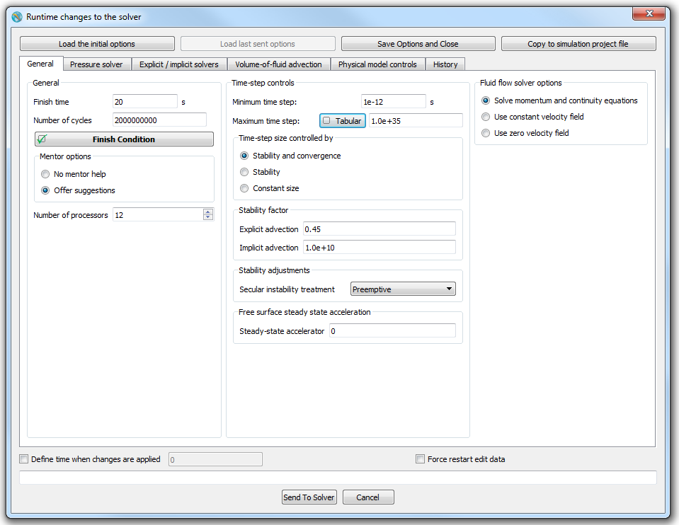
When changes are sent to the solver from the Runtime Options panel, the solver will process them within a few time steps (cycles). There is no way to guarantee the exact time when this takes place. After the solver processes the changes it may make further adjustments to make sure the new settings are consistent with other selections, and also to set the related default parameters. The adjusted values are then sent back to the GUI and displayed in Runtime Options. This may take from several seconds to several minutes (for larger simulations). Until then, the Send and Close and Close buttons are disabled.
The user can also revert either to the original simulation settings or the last set of options sent to the solver.
Below are the descriptions of the available options to several numerical algorithms commonly used in FLOW-3D simulations. The information on this chapter is by no means exhaustive and it may be necessary to refer to the Theory section of the manual for more information on the equations solved.
Note
It is recommended to not make a change unless you understand what the option does and you have a good reason to change it.
Volume-of-fluid advection¶
Volume-of-fluid advection¶
There are a number of methods to track fluid interfaces in FLOW-3D . Each is best suited for a certain type of flow problem, as indicated in the panel. There are two main types of fluid interfaces: a sharp interface and a diffuse interface. The default selection is Automatic, which chooses the best-fit option depending on the number of fluids and the presence of a sharp interface.
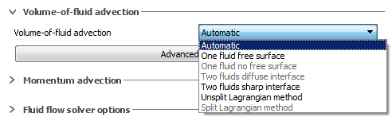
A free surface is an example of a sharp interface used in one-fluid flows with void regions. However, a sharp interface can also exist in two-fluid problems, e.g., between water and air.
Aside from Automatic, there are six choices in the panel. The One fluid, no free surface option turns off the VOF method and does not track fluid fraction at all; this can be used only for a single fluid confined flow simulation with no void. The Two fluids with diffuse interface method can only be used for two fluid flows without a sharp interface (i.e., when the two fluids can mix like oil and water or air and smoke) that can easily mix on a macro-scale. A second-order, monotonicity-preserving donor cell advection method is used in this case. The Two fluids with sharp interface option is used typically for two fluid simulations with a sharp interface; this uses a donor cell advection method where the donor cell can be on either side of the interface. The One fluid, free surface option is similar, but the donor cell is always on the F = 1 side of the interface. The Unsplit Lagrangian method and Split Lagrangian method (also known as TruVOF), are suitable for both one- and two-fluid flows. Generally, the two Lagrangian methods exhibit good accuracy in tracking sharp interfaces in complex three-dimensional motions. The Split Lagrangian method typically produces lower cumulative volume error than the other methods in FLOW-3D , although the volume error may increase when this method is used together with General moving objects.
A Flow Science Technical Note 63R on TruVOF is available online at http://users.flow3d.com/technical-notes/.
The user can make any of the selections available for interface tracking independently of the type of interface and number of fluids in the problem at hand. The descriptions of these options shown on the GUI’s Volume-of-fluid advection panel indicate the best use of these options. If the user selects Automatic, then the selection will be made by the code automatically, based on the type of the interface and the number of fluids.
Note
- When no fluid interfaces exist, i.e., and No sharp interface are selected, no fluid fraction advection is needed.
- The Lagrangian methods are not used as a default for any type of flow.
Advanced Options¶
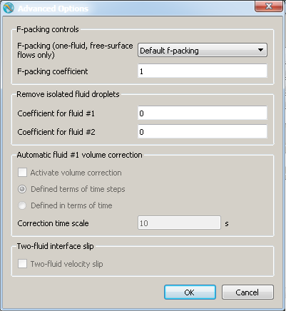
F-Packing controls¶
The F-packing algorithm is used to eliminate small voids or “foaming” in flows with significant free-surface breakup. The algorithm works by creating small negative divergences in internal fluid cells, in which the fluid fraction is less than 0.99. It is only used in one-fluid flows with free surfaces.
The F-packing algorithm is activated by choosing one of the three options in that activate the model. By default, Default f-packing is selected: this is the optimal setting for all types of flow. Selecting No f-packing completely turns off the model and is the default for flows without sharp interfaces. For one fluid, sharp interface flows, however, this can cause unphysical voids to open up within the flow. The option Close up interior voids is selected, it ensures that the F-packing model is always turned on.
The rate of F-packing is proportional to the F-packing coefficient. The default value is 1.0. When it is equal to 0.0 no packing will take place. Occasionally, pressure changes due to F-packing may significantly interfere with the main flow. An indication of such situation can be a “run away” pressure and/or velocity at a location in the flow, which is out of range of physically meaningful values. In that case a smaller value of the F-packing coefficient may be necessary.
Fluid fraction cleanup¶
The Fluid fraction cleanup value controls what FLOW-3D does when isolated fluid droplets (i.e., fluid occupying less than one cell) occur. The presence of such droplets can cause excessively long CPU times without adding to the accuracy of the simulation.The default value is 0.0 (i.e., no droplets removed); values greater than this will throw away such droplets when the fluid fraction within a computational cell is less than the prescribed value. There are independent thresholds for removing small amounts of fluid 1 or fluid 2. Use care when setting this value as large numbers can cause excessive fluid volume loss, especially for poorly-resolved flows or Shallow Water Model.
Automatic volume correction¶
The Automatic Fluid #1 Volume Correction option converts any accumulated fluid #1 volume error into a mass source rate based on the input Correction time scale. This mass source is then distributed evenly in all cells containing fluid #1 to offset any volume loss that might be occurring.
Two-fluid interface slip¶
When using the two-fluid model, this option represents a simplification for the velocity of the fluids at the interface. When checked the velocity of the heavier fluid will be set as the fluid velocity for both fluids in the interface cell and the fluids will interact only through pressure. Use this option when Fluid 1 is much heavier than fluid 2. This option assumes that the viscous boundary layer thickness at the interface between the two fluids is much smaller than a cell size.
Momentum advection¶
Order of approximation¶
The default momentum advection algorithm is a first-order upwind differencing method. It is robust and sufficiently accurate in most situations, although, as in any first-order method, it introduces numerical diffusion into the solution – in this case, it adds an artificial viscosity. The Momentum advection options are accessed in :
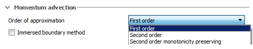
Control of the “upwindedness” of the First order momentum
advection option is by the parameter ALPHA which is
a weighting between full upwind (donor cell; ALPHA
= 1) and central differencing (ALPHA = 0).
ALPHA is set in namelist XPUT in the prepin.*.
When better accuracy is needed for the resolution of flow velocities, e.g., in vortices, then a second-order monotonicity-preserving upwind differencing method can be used by selecting Second order monotonicity preserving.
Another second-order method based on central differencing of the advection terms can be used by selecting Second order. This method is the least diffusive of the three, and performs well for circulating flows and free surface waves.
Immersed boundary method can be used to obtain more accurate force and velocity head predictions. This method works with the other three advection algorithms and can be selected independently.
Fluid flow solver options¶
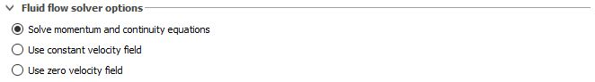
There are three options for the fluid flow solver. Solve momentum and continuity equations is the default option and it instructs the solver to solve for the motion of the fluid as normal. Use constant velocity field is used to study steady flow behavior and requires a previous solution for the flow field beforehand. It will not solve for the flow field so create a restart simulation to use this option. Use zero velocity field is applicable for heat transfer or electro-mechanics only and practically used when solidification is the main interest. Using this option will set all the fluid velocities to zero.
Time-Step Controls¶
A transient solution is advanced in time in incremental steps defined by the time step size which affects both the speed and accuracy of a simulation. The size of the time step is controlled in various ways. Its value is limited from above as well as from below; it must conform to the various stability limits to maintain accurate solution; it may be further reduced to improve convergence of the implicit solvers, and so on.
All these factors have a default behavior that is designed to achieve the best performance and is automatically enforced by the solver during the simulation. Specifically, when the time step size needs to be reduced to satisfy a certain condition, it will do so immediately, irrespective of the magnitude of the reduction. However, when the size limitation is relaxed, the time step size recovers at the rate of 5% per time step for a smooth transition to the higher value. This is done for better accuracy.
As with any numerical setting, the default settings for time step size may not be suitable for all cases. The user can modify them in .
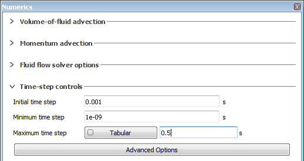
Initial time step is one of the parameters that likely needs to be adjusted to ease off the transition from the initial conditions to the actual simulation, since the pre-processor may not have enough information to come up with an optimum value. Most often it needs to be reduced compared to the default value.
Minimum time step is a safeguard to unreasonably long simulations. If during a simulation the time step size descreases below that value, the simulation will terminate with the appropriate message.
Maximum time step can be used to improve the accuracy of the solution by preventing the time step size from becoming too large, for example, to capture a fast changing time-dependent boundary condition. The limiting value can be defined as a function of time for more flexibility. BY default, the maximum time step size is set to a large value that does not interfere with the solution.
Advanced Options¶
More settings can be accessed in .
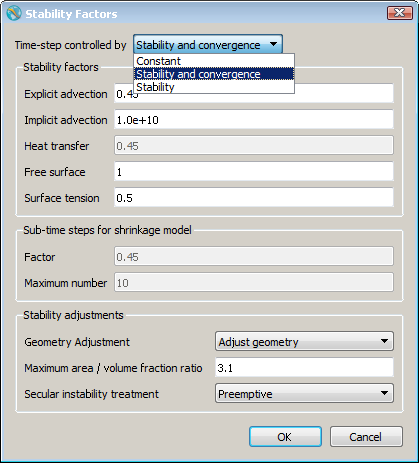
At the top of the dialog, the user can choose if the time step size is , in which case no other factor affects it, controlled by both (default), in which case convergence rate of pressure - and any other implicit solver envoked, - is taken into account, or only by , in which case the solver will use the maximum possible time step size for a stable solution.
Next in the dialog are the Safety factors used as multipliers for the various numerical stability limits imposed on the time step by the solver. For example, Explicit advection factor is the variable 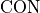 that multiplies the right-hand side of Eq. (443). It could be increased to relax the convective stability, but should never exceed the value of 1.0.
As a general rule, it is not recommended to modify Safety factors.
Stability adjustments section of the dialog provides access to the treatment of stability conditions associated with geometry surfaces and other fluid interfaces.
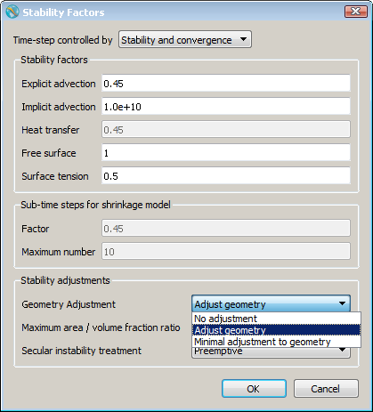
Geometry Adjustment dropdown menu has three choices. turns this feature off. selection modifies volume fractions in sliver cells for enhanced stability and convergence. Sliver cells are cell with a high ratio of an open face area fraction to the open volume fraction. This is the defaut behavior. The degree of adjustment is controlled by Maximum area/volume fraction ratio. Increasing the value of see Maximum area/volume fraction ratio results in a smaller adjustment, see Stability Considerations.
Finally, the option introduces smaller geometry adjustments comapred to . It may be used as an alternative to increasing Maximum area/volume fraction ratio.
Flow near boundaries such as walls and free surfaces may exhibit low-level, slow-growing secular instabilities due to potentially truncated convective fluxes near such boundaries. Secular instability treatment menu provides the means of treating these instabilities.
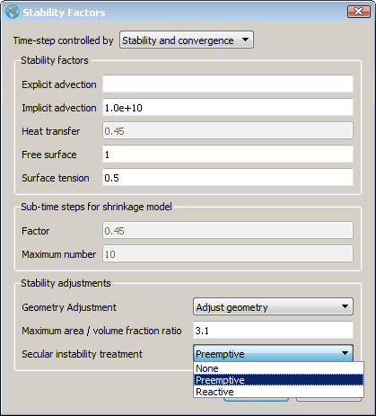
The default selection works by identifying flow conditions that may result in a secular instability, and then make adjustments to the flow solution even if no instability actualy exists. This options has proven itself over the years, but may make changes to the solution that are not needed.
option watches the solution for secular instabilities and adds damping terms only
when and where those instabilities are detected, with diagnostic messages written to the hd3err file. The solution
then progresses largely unaffected, with the instabilities eliminated.
The selection turns off any treatment of secular instabilities.
FAVOR Options¶
FAVOR Tolerance¶
FAVORTM is a very powerful method for incorporating geometry effects into the governing equations but, like all discrete methods, it is affected by the resolution of the computational grid. This is because the preprocessor generates area fractions for each cell face in the grid by determining which corners of the face are inside of a defined geometry. If all four corners of a cell face are inside the geometry, then the entire face is defined to be within the geometry. Similarly, if all corners lie outside, then the entire face is assumed to be outside the geometry. When some face corners are inside a geometry and some are outside, the intersection of the geometry with face edges are computed. Area fractions are then computed from these intersection points assuming straight-line connections between intersection points within the face. The straight-line assumption introduces a small error in the fractional area when the geometry boundary is curved inside the cell. The approximation is consistent with the other assumptions in the development of the equations and improves as the grid resolution is refined.
The implication of this construction is that features that are smaller than the cell size are not resolved. More specifically, any piece of a geometry that extends across a cell face but does not including a corner of that cell face is not recognized by the area fraction generator. For instance, a small spherical object (say smaller than a mesh cell) will not be recorded unless it covers at least one grid vertex, as illustrated for the circle in the lower right corner of the mesh shown below. For some geometries and mesh resolutions it is possible that the geometry may intersect a cell face more than once. In this case the corresponding cell edge is assumed to be either fully inside the object or fully outside. The representation is improved as the mesh resolution is increased (i.e., the cell size is decreased).
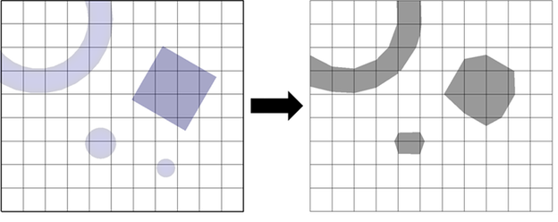Figure 1: Object definition (left) and object created (right).
The |favor| Tolerance option represents the minimum cell volume fraction to account for any geometrical features.
Gap Tolerance¶
When multiple STLs are used, due to either design or assembly tolerance, or simply mismatch between STLs, gaps might be introduced after FAVORTM. These gaps are usually unwanted, and for most cases, have to be closed. As an extension to FAVORTM, gap closing algorithm is implemented for this purpose.
When processing the geometry, the center point and the normal of the cut faces for each component are computed, as shown below. This information is used to compute the gap size.
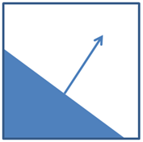
Assume the cut faces are relatively parallel to each other, the distance between the two cut faces can be easily computed. If the distance is smaller than the gap tolerance, the gap is then closed by setting the cell volume fractions to zero (fully filled by solid).
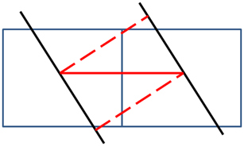
To simplify the cut face searching, only nearest neighbors are searched. As a result, the cell size has to be larger than the gap size. For the gaps that are larger than the cell size, they will be considered as the geometry feature that needs to be resolved, and thus will not be closed. On the other hand, since the gap size is computed based on the cut face information, the mesh has to be fine enough to avoid multiple cuts from one component in one cell, as shown below, to make sure the cut face information computed is accurate.
To reduce the memory usage, it is assumed that there are at most three components in one cell. The gaps are closed on component basis, however, the gaps between subcomponents can also be closed, as long as they do not cut the same cell.
The Gap tolerance option can be used to close the aforementioned gaps. The default value is 0.0, which means the gap closing algorithm will NOT be applied.
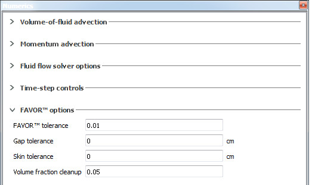
Due to uncertainties in the cut cell calculations, it is recommended that the gap tolerance specified is a little bit (10%) larger than the real value. Even so, it is possible that not all gaps are closed, and it is recommended to check the critical locations before running the full simulation.
Note
For more information about components and subcomponents, please refer to Creating Geometry Objects.
Skin Tolerance¶
Due to the same reasons as gaps, sometimes one component is covered by a thin layer of artificial skin from another component. If the two components have very different properties, or sometimes required by different physical models, the thin skin needs to be converted to the base component it covers. As another extension to FAVORTM, skin conversion is implemented for this purpose.
The skin thickness is computed based on the cut cell information, similar as the gap distance. If the skin thickness is less than the skin tolerance specified, the cell component number is changed to the base component it covers. Below is an example shows the geometry configuration (left) and the cell component number before (middle) and after (right) skin conversion.
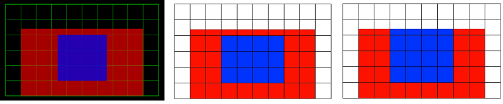
Since the skin thickness is computed similar as gap distance, it suffers the same limitations. The cut faces have to be relatively parallel to each other. The cell size has to be larger than the skin size. The mesh has to be fine enough to avoid multiple cuts from one component in one cell. There are at most three components in one cell.
The Skin tolerance option can be used for removing such skins. The default value is 0.0, which means the skin converting algorithm will NOT be applied.
Due to uncertainties in cut cell calculations, it is recommended that the skin tolerance specified is a little bit (10%) larger than the real value. Even so, it is possible that not all skins are converted, and it is recommended to check the critical locations before running the full simulation.
To make sure the cut cell information is computed correctly, and to avoid multi-cut issues as described above, it is recommended to not cut a hole using the base component when defining the skin component.
Note
Skin conversion is not compatible with cores/liners in thermal die cycling simulations.
Volume fraction cleanup¶
Finally, the Volume fraction cleanup option can be used to help with fluid cleanup in areas of geometrical inconsistency between solids.
Pressure solver options¶
Pressure solver type¶
The selection of different pressure solvers can be done in .
For incompressible flows, including flows with acoustic waves, pressure forces in the momentum equation are always approximated implicitly, enforcing the incompressibility of the fluid and maintainng stability of the umerical solution.
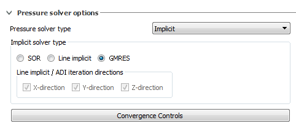
For compressible fluid flows, the Implicit option is the default, but users may opt for the Explicit pressure solver. In that case no pressure iterations are required to obtain the numerical solution. However, the time-step size will be limited by the Courant stability criterion in which the fluid velocity includes the speed of sound, which may drastically limit the time step size. Explicit approximations are, generally, more accurate than the implicit ones, especially when the solution involves strong pressure transients, e.g., shock waves. However, the time-step size limitation may be too severe to perform an efficient calculation. A compromise approach can be used by using an Implicit pressure solver, and limiting the time step manually, e.g., by the time it takes acoustic waves to propagate a certain distance in the computational domain.
For “stiff” incompressible flow problems convergence of the velocity-pressure iterations can be improved by “softening” the fluid using the limited compressibility model. This feature can be used by setting a constant compressibility coefficient in . The compressibility coefficient is the inverse of the bulk modulus.
Implicit solver type¶
The default iteration method is the GMRES algorithm. This solver is a highly accurate and efficient method for a wide range of problems. It possesses good convergence, symmetry and performance properties and is recommended for all kinds of flow problems. It does use somewhat more memory than the other two methods available in FLOW-3D . Usually, the GMRES solver does not require any over or under relaxation to achieve good convergence. However, as with the SOR and Line implicit solvers, under-relaxation may be used when the implicit method for coupling of GMO components with fluid pressure forces is used. For more details, a Flow Science technical note on the GMRES pressure solver (TN68) can be found at http://users.flow3d.com/technical-notes/.
The point-by-point SOR algorithm achieves fast convergence in a wide range of flow conditions, but convergence may be slow when mesh cells have large aspect ratios. In that case the Line implicit (ADI) algorithm can often be used to improve convergence. The main advantage of the SOR algorithm is that is uses less memory than the GMRES algorithm, which may be critical for some simulations.
The Line implicit method can be used in any single coordinate direction, or in a combination of directions. The use of the Line implicit algorithm is also useful when flow solution symmetry needs to be preserved. The SOR method is not symmetric with respect to the direction of the coordinate axes (the discrepancy is smaller for tighter converged solutions). For example, if the physical flow conditions are symmetric relative to a plane normal to x-direction, then selecting the Line implicit solver in that direction will maintain the symmetry of the iteration solution.
The Relaxation factor, accessible in , defaults to 1.7 for
incompressible and to 1.0 for compressible flows for the SOR
algorithm. It is not recommended to change the defaults. In any case,
OMEGA must be between 0.0 and 2.0 for a stable solution.
When the Implicit solver option for Moving object/Fluid coupling is selected in , the value of the Relaxation factor is automatically calculated during the simulation to ensure good convergence of the solution. Under-relaxation (i.e., values of Relaxation factor < 1.0) is typically used for moving objects that are lighter than fluid.
When periodic mesh boundary conditions are used in the azimuthal direction with a Cylindrical mesh, it is recommended to use the Line implicit solver in the Y-direction. This will help eliminate numerical noise in the pressure and velocity solution that can sometimes occur at such boundaries. Alternatively, setting the Relaxation factor to 1.0 may help to reduce the noise.
Note
Watch for preprocessor messages recommending the Line implicit method in certain coordinate directions based on the mesh cells aspect ratios (prpout file).
Convergence Controls¶
By default, the convergence criterion for pressure iterations, EPSI, is
evaluated automatically during a calculation and printed out into the solver
message, hd3msg, and solver summary, hd3out, files. This is the
recommended option. At every cycle, the pressure solver solves a system of
linear equations of the form:
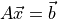
where:
 is the solution matrix
is the solution matrix- 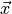 is the pressure update
- 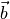 is the Right Hand Side (RHS) vector
Since the exact pressure update is not known, it is not possible to determine
the error in  exactly. Instead, the error is measured by computing the
residual:
exactly. Instead, the error is measured by computing the
residual:
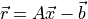
The maximum residual among all cells (or equivalently, the first norm of the residual) is one way to quantify the error. A simple convergence criterion would then be:
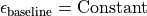
where:
- 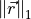 is the first norm (or maximum value) of the residual
 is a constant with the
appropriate scaling to account for dimensionality
is a constant with the
appropriate scaling to account for dimensionality
The SOR pressure solver, by default, uses a convergence criterion of this form. While this works well for many problems, sometimes, especially when using the GMRES solver, the solution does not converge well based on a single absolute convergence criterion. Therefore, for the GMRES pressure solver, the default convergence criterion uses a combination of baseline absolute (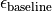), steady-state absolute () and relative (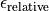) convergence limits to decide on a good convergence limit for the maximum residual:
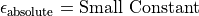
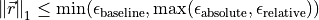
Convergence criterion¶
The baseline and steady-state absolute convergence limits are constants (after
suitable scaling to account for dimensionality effects). The relative
convergence limit on the other hand is proportional to the second norm of the
RHS vector, 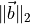. The relative convergence
criterion is dominant in unsteady flows, whereas the steady-state absolute
convergence limit, which is couple of orders of magnitude smaller than
 , becomes relevant as the flow approaches steady
state.
, becomes relevant as the flow approaches steady
state.
The baseline convergence limit can be tightened (for both SOR and GMRES
pressure solvers) by defining a positive value of less than one in
. It is not
recommended to use a value larger than one. This paramater can also be
specified by setting EPSADJ in the XPUT namelist of the
prepin file.
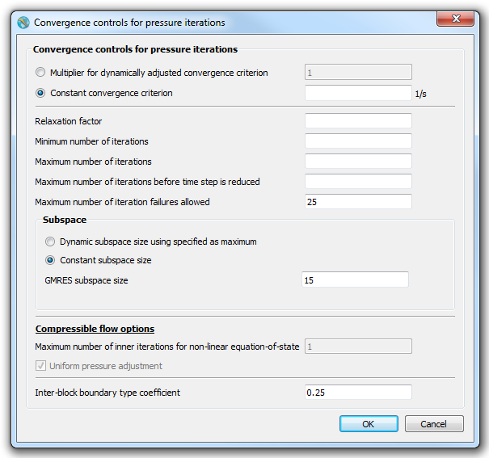
It is important to note that setting the convergence mulitplier
(EPSADJ) only scales the baseline convergence limit
() but not the steady-state absolute
() or relative () convergence limits. Therefore, for the GMRES pressure solver,
reducing the convergence multiplier will change the solution only when
falls below 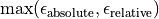. When the GMRES pressure solver is used,
the baseline, absolute and relative convergence limits are written to the
solver summary, hd3out, file.
Although the default convergence criterion comes up with a good convergence
limit for most problems, sometimes the user may wish to tighten or loosen the
convergence limit. The user can specify a Constant convergence
criterion by setting a positive value in the dialog box (or set EPSI
in the XPUT namelist of the prepin file). The convergence
criterion then becomes:
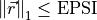
Relaxation factor¶
The Relaxation factor adjusts the convergence path by modifying each post-iteration value using a weighted average of the old and new values. The default value is one and values less than one slow and stabilize convergence while values greater than one can accelerate convergence.
Minimum number of iterations¶
The Minimum number of iterations option can ensure that the solver iterates even if the residual is less than the convergence criterion.
Maximum number of iterations¶
The Maximum number of iterations is an option that prevents infinite or near-infinite loops where the pressure solver does not converge or does so very slowly. The default value varies depending on the type of pressure solver from 100 to 1000.
Maximum number of iterations before time step is reduced¶
This option is used only when the time-step is controlled by Stability and convergence. After the defined number of iterations is reached, it reduces the time step size to ease convergence and improve overall speed.
Maximum number of iteration failures allowed¶
This option is used to specify the maximum number of times the pressure solver does not converge before aborting the simulation.
Subspace¶
These options are only used for the GMRES solver. The GMRES subspace size controls how the solution is mapped to the Krylov subspace. In general, larger values use more resources but improve convergence. The default value is 25. Values above 100 may use excessive resources and are not recommended. The Dynamic subspace size option will adjust the subspace size depending on pressure solver performance to improve solver efficiency with the specified value as the maximum. The Constant subspace size option will use the specified constant subspace size.
Compressible Pressure Iterations¶
For compressible flows, pressure terms can be approximated explicitly by selecting . This may be useful to improve the solution accuracy for tracking transient pressure waves. However, the convective time step stability limit will be computed using not only the flow velocity, but the sound speed as well, potentially making the time-step size too small for an efficient simulation. The default SOR implicit method is usually best for most situations.
Specified velocity or pressure boundary conditions for compressible flows can create a uniform pressure change in the computational domain that is difficult to compute by either Line implicit or SOR methods. For this situation an additional algorithm is provided to give a uniform global pressure adjustment. Select . Then a uniform pressure adjustment is done at the end of each cycle to take into account overall pressure changes due to sources, sinks and non-zero net boundary fluxes.
If the equation of state is non-linear with respect to its pressure/density dependence, then inner iterations may be required for better convergence. These iterations are set in . Set it equal to a value larger than 1 to use the inner iteration procedure. This option is particularly useful for explicit pressure calculations when a non-linear equation of state is used. The Relaxation factor set to 1.0 is recommended in nearly all cases, and especially if the number of inner iterations is greater than 1.
Note
Currently, the built-in equation of state is that for a perfect gas, therefore, it is linear with respect to its pressure vs. density dependence. Using inner pressure iterations offers no advantage.
See also
FSI/TSE Solver Options¶
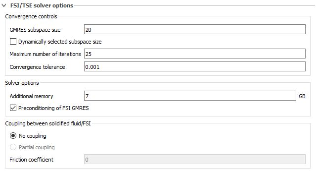
Convergence Controls¶
GMRES subspace size¶
Since the FSI/TSE solver is a GMRES type of solver, the GMRES subspace size needs to be specified. As with the pressure solver this option determines how the solution is mapped to the Krylov subspace. In general, larger values use more resources but improve convergence. The default value is 25. Values above 100 may eequire excessive resources and are not recommended. When checked, the Dynamic subspace size option will adjust the subspace size depending on the FSI/TSE solver performance to improve solver efficiency with the specified value as the maximum. When unchecked, the specified GMRES subspace size will remain constant through the simulation.
Maximum number of iterations¶
The Maximum number of iterations is an option that prevents infinite or near-infinite loops where the FSI/TSE solver does not converge or does so very slowly. The default value is 25 but more iterations maybe necessary to ensure convergence. Watch for a * next to the residual/ε value for the FSI/TSE solver in the solver messages diagnostic file as it indicates that the solver has not fully converged.
Convergence tolerance¶
The value of the Convergence tolerance can be thought of as a contant convergence criterion for the FSI/TSE solver. and it represents the maximum error tolerance. Another iteration needs to be performed if this value is not met.
Solver Options¶
Additional memory¶
The Additional memory field provides users the option to allocate additional memory to the FST/TSE solver. The default value of 7Gb is appropriate for up to one million nodes. If the FE mesh is finer, approximately 7Gb for each additional million nodes should be added.
Coupling between solidified fluid/FSI¶
For the interactions between FSI components and solidified fluid, when the default coupling option No coupling is selected, and solidified fluid comes in contact with an FSI component the interface is always assumed to be fixed; i.e., the nodes at the interface do not move during the course of the simulation.
When the Partial coupling option is selected, there is a transfer of stress across the boundary between the solidified fluid and the FSI component that it is in contact. Normal compressive stresses are fully transferred, while normal tensile forces are not (i.e., solidified fluid and FSI component can freely pull apart), and tangential forces are partially transferred, depending on the user-specified Friction coefficient.
Friction coefficient¶
When the Partial coupling option is chosen, the Friction coefficient determines the magnitude of the tangential forces between the solidified fluid and the FSI component that it is in contact with.
Viscous stress solver options¶
By default, viscous stresses in fluid are approximated explicitly. This produces a simple and efficient algorithm that requires a limit on the time-step size to maintain stability of the numerical solution. If this limit is too small for efficient computation of the solution, one of the two available implicit Viscous stress solver options can be selected:
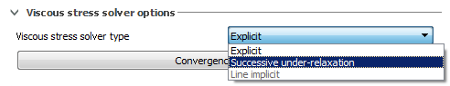
Viscous stress solver type¶
Viscous iterations are performed when an implicit viscous algorithm is chosen for the approximation of viscous stresses in the Navier-Stokes equations in . An implicit method can be used to remove the time-step size stability limit associated with the explicit approach. When viscous stability limit is substantially smaller than other stability limits in a simulation, then using the implicit method may significantly improve the efficiency of the calculation.
There are two implicit viscous solvers available in the Numerics panel: Successive under-relaxation, and Line implicit. Both are designed to handle highly viscous flows. Each has its strength and weaknesses. The brief descriptions of these solvers in this section are based on cumulative user and our own experience in using these methods.
The Successive under-relaxation method is usually the most stable in that it provides smooth and bound solution for a wide range of flow problems. However, the convergence rate is slower than that in the Line implicit method. It is often not practical to iterate on the solution to achieve the required convergence level. More commonly, the number of iterations at each time step are limited by the Maximum number of iterations (located under the Convergence controls button, see image above), whose default value is 20. Due to the inherent stability of this method, lack of convergence does not result in an unstable solution. However, an improper balance of forces acting on fluid, like gravity and pressure, may be a result of this. Therefore, this method is recommended for flows where viscous stresses are the dominant flow effect. The Successive under-relaxation method can also be used when the Line implicit method fails to provide a converged solution.
Note
The Successive under-relaxation method can be used together with the SOR, Line implicit and GMRES implicit pressure solvers.
The Line implicit method exhibits good convergence rates - when it converges - with convergence itself sensitive to flow perturbations and variations in fluid properties, like viscosity and density. Sometimes, it may actually diverge, resulting in an unphysical solution. The Line implicit method is designed to provide good coupling between pressure and gravity on one side and viscous forces on the other, which are updated within one iteration (therefore, there is no choice of pressure solvers for this method). In cases when these factors are equally important in the flow, convergence may be slow because these forces usually work in opposite directions.
In practice, it is often necessary to try both of these methods to determine which one works best. The ultimate test for accuracy, of course, is to compare the implicit results with the explicit solution, if possible.
The Successive under-relaxation viscous solver introduces a separate iteration count, in addition to pressure iterations, which is printed together with the pressure iteration counter in the Simulation manager window. With the Line implicit method, pressure and velocity adjustments occur in the same iteration loop, so there is only one iteration counter.
Convergence options can be adjusted in Convergence controls for the implicit viscous solver. The most important of them is the Maximum number of iterations, which controls the maximum number of viscous iterations per time step.
Note
It is not recommended to use any implicit viscous model together with a turbulence model that involves the solution of an additional transport equation because viscous diffusion terms in the turbulent transport equations are always approximated explicitly. The implicit viscous solvers are also not designed to be used together with the compressible flow model, although they may still work if compressibility is not a big factor.
Convergence Controls¶
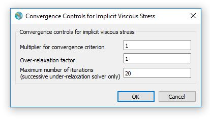
Multiplier for convergence criterion¶
The baseline convergence limit can be tightened for both Successive under-relaxation and Line implicit viscous stress solvers by defining a positive value of less than one in . It is not recommended to use a value larger than one.
Relaxation factor¶
The Relaxation factor adjusts the convergence path by modifying each post-iteration value using a weighted average of the old and new values. The default value is one and values less than one slow and stabilize convergence while values greater than one can accelerate convergence. The defaulr value for the Implicit viscous stress solvers is 1.
Maximum number of iterations¶
The Maximum number of iterations is an option that is only relevant for the Successive under-relaxation viscous stress solver and it is used to prevent infinite or near-infinite loops where the implicit viscous stress solver does not converge or does so very slowly. The default value for the Maximum number of iterations is 20.
Electric field solver options¶
The electric field solver is a coupled implicit solver that calculates the electric charge and potential and hence the intensity of the electric field. The Maximum number of coupled electric charge-potential iterations is, by default, set to 20 but this value should be increased for smale scale flows or high intensity electric fields.
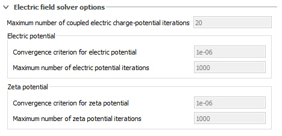
Electric Potential¶
This input field box contains the implicit solver settings for the Electric potential electric field solver
Convergence criterion for electric potential¶
Contrary to other implicit solvers, the electric potential solver convergence criterion needs to be expressed as an absolute value rather than a multiplier. By default, it is set to 1E-6. Values above that will reduce accuracy but may improve runtime while values below that will have the opposite effect.
Maximum number of electric potential iterations¶
The maxmimum number of iterations for the Electric potential can be defined using this input field. It is used to prevent infinite or near-infinite loops where the implicit Electric potential solver does not converge or does so very slowly. The default value for the Maximum number of electric potential iterations is 1000.
Zeta Potential¶
This input field box contains the implicit solver settings for the Zeta potential electric field solver
Convergence criterion for zeta potential¶
Similarly to the electric potential solver, the zeta potential solver convergence criterion needs to be expressed as an absolute value. By default, it is set to 1E-6. Values above that will reduce accuracy but may improve runtime while values below that will have the opposite effect.
Maximum number of electric potential iterations¶
The maxmimum number of iterations for the Zeta potential can be defined using this input field. It is used to prevent infinite or near-infinite loops where the implicit Zeta potential solver does not converge or does so very slowly. The default value for the Maximum number of zeta potential iterations is 1000.
Other explicit/implicit solver options¶
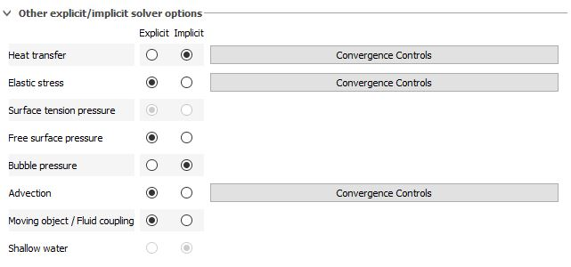
Heat Transfer¶
Implicit treatment of heat transfer and conductive fluxes is selected in . An implicit method can be used to remove the time-step size stability limit associated with the explicit approach. When the conductive or heat transfer stability limit is substantially smaller than other stability limits in a simulation, then using the implicit method may significantly improve the efficiency of the calculation.
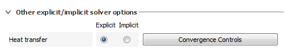
The Implicit algorithm requires iterations to obtain a thermal solution at each time step. Iterations involve updating temperatures in fluid and geometry components. If there are no other time-step size restrictions during a calculation, then the time-step size is controlled by the number of thermal iterations.
When the implicit method is used together with the Solidification model, the thermal energy must be a unique function of temperature. In other words, the derivative of energy with respect to temperature, 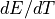, must be a positive finite number for all temperatures. When the latent heat is released at a constant temperature, e.g., when the liquidus temperature is equal to the solidus, a small artificial freezing range will be introduced in the preprocessor to keep finite.
Note
Thermal iteration residuals are normalized by temperature. As a consequence, when the absolute temperatures are substantially larger than the change in temperatures, convergence may be too loose, potentially leading to significant errors. In such situations solution accuracy can be improved by reducing the Multiplier for convergence criterion below 1 by selecting the Convergence button (see image above).
Convergence controls¶
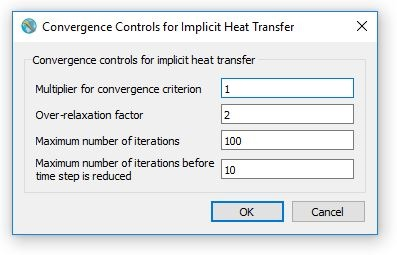
Multiplier for convergence criterion¶
The baseline convergence limit can be tightened for the Implicit heat trasnfer solver by defining a positive value of less than one in . It is not recommended to use a value larger than one.
Over-relaxation factor¶
The Relaxation factor adjusts the convergence path by modifying each post-iteration value using a weighted average of the old and new values. The default value is one and values less than one slow and stabilize convergence while values greater than one can accelerate convergence. The default value for the Implicit heat trasnfer solver is 2.
Maximum number of iterations¶
The Maximum number of iterations is used to prevent infinite or near-infinite loops where the Implicit heat trasnfer solver does not converge or does so very slowly. The default value for the Maximum number of iterations is 100.
Maximum number of iterations before time step is reduced¶
This option is used only when the time-step is controlled by Stability and convergence. After the defined number of iterations is reached, it reduces the time step size to ease convergence and improve overall speed. The default value for the Maximum number of iterations before time step is reduced is 10.
Elastic Stress¶
Similarly to most physical models the elastic stresses for the Elasto-visco-plasticity model are calculated explicitly by default. This solver is applicable when modeling a viscoelastic or elasto-visco-plastic fluid and may impose a limit on time-step size. If this explicit limitation is too small, then an implicit approximation can be activated in the options listed under Numerics –> Other explicit/implicit solver options –> Elastic stress.
Convergence controls¶
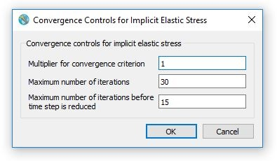
Multiplier for convergence criterion¶
The baseline convergence limit can be tightened for the Implicit elastic stress solver by defining a positive value of less than one in . It is not recommended to use a value larger than one.
Maximum number of iterations¶
The Maximum number of iterations is used to prevent infinite or near-infinite loops where the Implicit Elastic stress solver does not converge or does so very slowly. The default value for the Maximum number of iterations is 30.
Maximum number of iterations before time step is reduced¶
This option is used only when the time-step is controlled by Stability and convergence. After the defined number of iterations is reached, it reduces the time step size to ease convergence and improve overall speed. The default value for the Maximum number of iterations before time step is reduced is 15.
Surface tension¶
As with other physical models, the default treatment of surface tension forces uses an explicit numerical approximation. This imposes a limit on time-step size. If this explicit limitation is too small, then an implicit approximation can be activated in the options listed under Numerics –> Other explicit/implicit solver options.
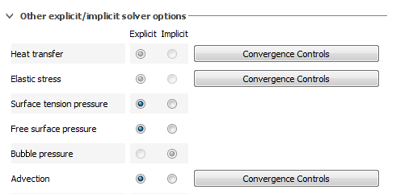
The implicit option for surface tension is based on a linear projection of the forces forward in time. With this technique no iterations are required to evaluate the advanced forces, but it does mean that some limitation should still be applied to the time-step size to avoid unacceptable errors. A general guideline is that the time-step size should not be more than about five times the explicit time-step limit. The solver will automatically enforce this limit by setting Surface tension equal to 2.5 under Numerics –> Other explicit/implicit solver options –> Time-step controls –> Advanced options.
Using a time-step more than the factor of five may work, but is likely to create some unwanted numerical noise in the surface tension forces.
Free surface pressure¶
The calculations of pressure on the free surface for simulations that have a sharp interface can be performed either explicitly or implicitly. The Exlicit Free surface pressure solver option is the default and it is recommended for almost all applications.
Bubble pressure¶
In the event that the Bubble and phase change model is active, the bubble pressure can be calculated either via an Exlicit or an Implicit solver. The Implicit solver is the default and recommended for most applications.
Advection¶
The default techniques for advection of momentum and all other fluid quantities are based on explicit numerical approximations. Explicit methods are simple, and accurate, but require a limit on the maximum time-step size to maintain numerical stability. An implicit technique that removes this limitation can be requested in .
The implicit treatment of the advection terms in the transport equations is applied selectively in space and time in cells if it allows the time-step size to be increased with a minimal loss of accuracy. For example, to maintain accuracy of the interface tracking the implicit method is not used in cells that contain free surfaces.
Once implicit advection is activated, additional options become available under the button located next to . These options provide the means to fine-tune the selective application of the implicit apprxoimation to achieve best performance and accuracy.
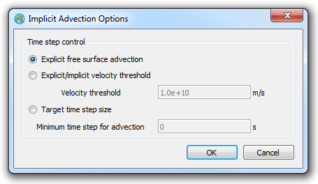
The default selection excludes cells containing free surface from the implicit treatment. This is generally sufficient to maintain a reasonable level of accuracy, especiallly if the largest velocities are located near free surface.
If the is selected, then all cells with velocities below are treated explicitly, with the remaining cells treated implicitly. This option helps to speed up simulations where there may be occasional splashing or jetting, with small, fast-moving droplets of fluid holding down the time step size. Treating these droplets implicitly would avoid the slow down of the calculation due to the descrease in time step size. The value of ideally shoud be larger than the velocity of the bulk of the fluid and smaller than the velocity of the fast droplets, ensuring that the main flow solution remains accurate.
If the is selected, then cells where the local convective stability limit is below are treated implicitly, with the explicit approximation used in the remaining cells. This option is designed more for speeding up simulations rather than controlling accuracy since it is often hard to know a priori what time step size is best to maintain acceptable accuracy.
When the implicit advection method is activated, a new output quantity called “Courant number” is calculated and stored in every cell as part of the restart data edits. Courant number is a dimensionless parameter equal to the ratio of the left-hand side of Eq.:Eq:stabilityConsiderations1 to its right-hand side. The Courant number is less than 1.0 in cells where advection is treated explicitly, and greater than 1.0 where the implicit approximation is applied. The amount by which the Courant number exceeds 1.0 is a measure of the accuracy of the implicit numerical approximation in the cell - the larger is the Courant number the less accurate is the approximation.
It should always be kept in mind that implicit techniques invariably introduce some amount of smoothing or damping of the computed results beyond what is expected with explicit techniques. Due to the nature of the implicit advection approximation in FLOW-3D, it is recommended to keep the maximum Courant number below 10.0.
Note
Only the first-order advection options for momentum, density and energy can be used in combination with the implicit advection.
Moving object/Fluid coupling¶
Similarly for all the models mentioned in this section, the option exists to select an Exlicit or an Implicit for the interactions between fluid and moving objects. The Exlicit solver cannot correctly handle moving objects whose density is equal to or less than the density of the fluid. Hence, it is recommended to opt for the Implicit solver since it is not subject to this limitation.
Shallow water¶
The default treatment of shallow water model uses an Implicit numerical approximation. This should impose no limit on time-step size. If this approach does not yield results of adequate accuracy, an Exlicit is also available and can be activated in the options listed under Numerics –> Other explicit/implicit solver options –> Shallow water.
Additional options¶
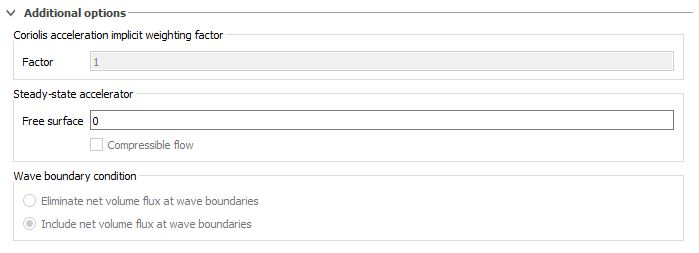
Coriolis acceleration implicit weighting factor¶
For simulations where the non-inertial reference frame is activated from there exists the option to implement a stability subroutine that determines the ratio between predicted velocities. The Coriolis acceleration implicit weighting factor values can be either 0 or 1 and detrmine whether the coriolis acceleration stability subroutine will be called. The default value of 1 implies that the contributions of the coriolis acceleration will be taken into account at the next time-step. This value works well for the majority of cases. A value of 0 means that the velocity contributions from the coriolis forces will be taken into account at the current time-step. It was determined that this may improve the behavior of the simulation for cases involving sudden high accelarations in cylidrical mesh blocks.
Steady-state accelerator¶
In free-surface flows, surface waves may require a long time to damp out to produce a steady surface configuration, especially in flows with large expanses of water surface such as rivers, lakes and the seas. The steady-state accelerator adds damping to these waves, providing a faster approach to steady free-surface flow than by directly computing the asymptotic state of a transient flow.
This is achieved by modifying the value of pressure at the free surface by the amount 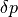 that acts in the direction opposite of the fluid velocity component normal to the surface, 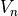,
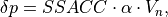
where:
- 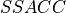 is the user-defined Steady-state accelerator coefficient
 contains terms dependent on cell size, time step and other factors
contains terms dependent on cell size, time step and other factors
The value of should be in the range between 0 and 1, with = 1 giving the maximum damping.
The steady-state accelerator is activated within the as well as in the (see Making Runtime Changes) allowing users to modify during simulation. Within both of these menus is an input option for the Steady-state accelerator where the user defines the value of in the Free surface input box. The Steady-state accelerator is activated when a value greater than 0 is defined for Free surface.
The value of is further tempered not to exceed or overwhelm the physical forces acting on the fluid such as advection, gravity and surface tension. At steady state, = 0, so the extra pressure term vanishes. The result is a solution in which all forces are properly accounted for at all stages, with the additional damping of the high-frequency surface waves that steer the solution toward steady state, if it exists.
When the steady-state accelerator is used, transients in a free-surface flow can no longer be viewed as completely realistic. The damping pressure is not a physical force but only a mechanism to reduce wave propagation and reflections. The damper has been devised to not interfere with the evolution of large transients.
Note
- Users should be alert to possible excess damping that the force limiters might not have anticipated, which can be corrected by reducing the input value of the damping coefficient, Free surface.
- The steady-state acceleration procedure may not be useful if no steady state exists, in which case the accuracy of the solution may be compromised at all times during the simulation.
Steady-state accelerator for confined flows¶
If the flow is confined or a free surface is not present, an accelerated approach to a steady-state flow regime can sometimes be achieved by setting a large number (e.g., 106) for , the Relaxation factor equal to 1.0, and using the SOR pressure solver.
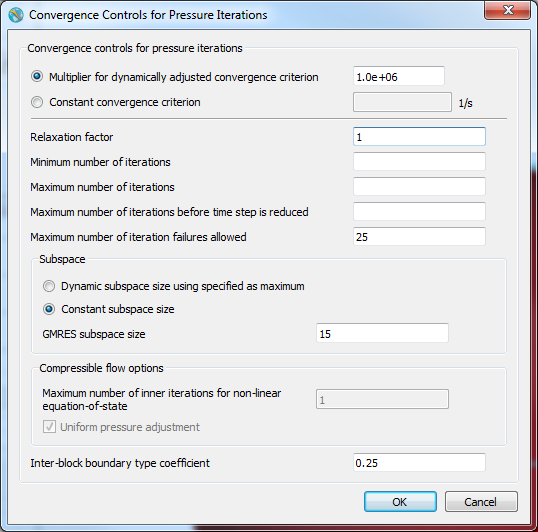
In this case very few pressure iterations will be carried out since the convergence criterion is very large. Therefore, the transient solution, as the flow changes from the initial conditions to a steady-state flow, will not be accurate. However, it should eventually converge to a reasonable solution.
Note
- This option can only be used for Confined Flows (one fluid, no sharp interface) without heat transfer. Additionally, it must use the SOR pressure solver.
- If a steady state solution does not exist, then the numerical solution may become increasingly inaccurate as it progresses with time.
Wave boundary condition¶
The options of this section allow users to determine whether an automatic net volume flux will be added in the event that a wave boundary condition is used in the simulation. When set to Eliminate new volume flux at wave boundaries, the solver maintains the total fluid volume of the domain constant when wave boundary conditions are used. When set to Include new volume flux at wave boundaries, the solver increases total fluid volume of the domain depending on the specific current conditions e.g. when modeling the transition from low tide to high tide.
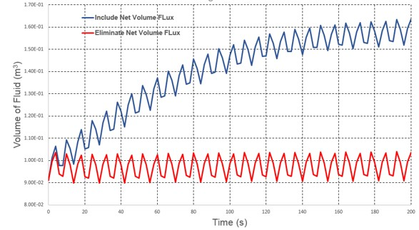
Numerical options not found in the Numerics widget¶
Density advection¶
The default fluid density advection algorithm in variable density problems is a first-order upwind differencing method. It is robust and sufficiently accurate in most situations, although, as in any first-order method, it introduces numerical diffusion into the solution. This method is activated when is selected.
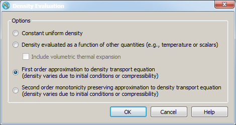
When better accuracy is needed for the resolution of density mixing due to advection, e.g., in stratified flows, then a second-order upwind differencing method can be used by selecting Second order monotonicity preserving.
Note
No energy transport is allowed in one-fluid problems with density transport.
Energy advection¶
The default thermal energy advection algorithm in problems involving heat transfer is a first-order upwind differencing method. It is robust and sufficiently accurate in most situations, although, as in any first-order method, it introduces numerical diffusion into the solution. This method is activated when is selected. When better accuracy is needed for the resolution of thermal mixing due to advection, e.g., in buoyant flows, then a second-order upwind differencing method can be used by selecting Second order monotonicity preserving.
Note
No energy transport is allowed in one-fluid problems with density transport.
FLOW-3D and TruVOF are registered trademarks in the USA and other countries.